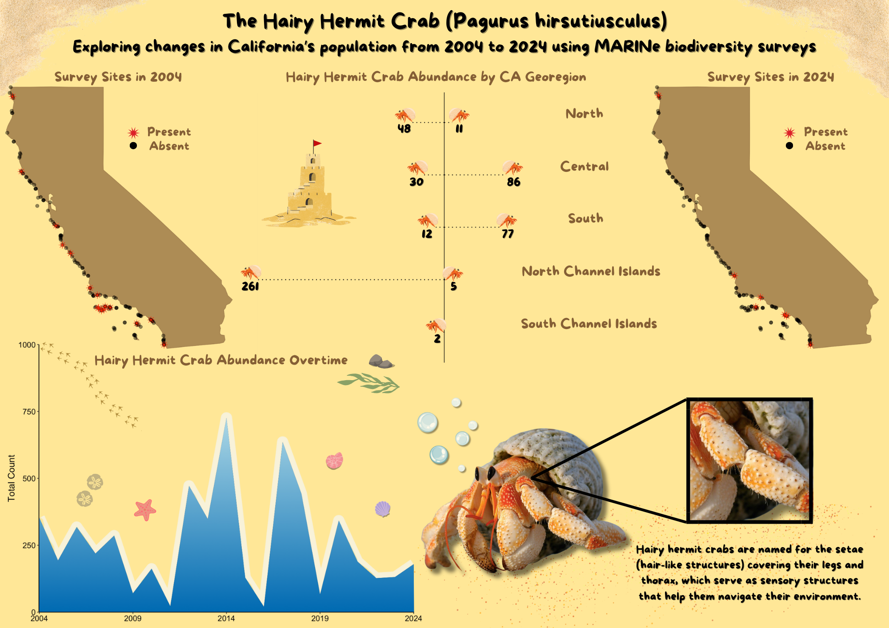

Pagurus hirsutiusculus, commonly known as the hairy hermit crab, is a key intertidal species found along the California coastline. These scavengers play a crucial role in nutrient cycling by consuming dead organic matter and recycling nutrients back into the ecosystem. However, over the past two decades, climate change has altered habitat conditions and resource availability, leading to a decline in their abundance along the coast. Using biodiversity survey data from the Multi-Agency Rocky Intertidal Network (MARINe), this infographic will illustrate changes in the distribution and abundance of P. hirsutiusculus over time, highlighting differences between 2004 and 2024.

Approach
In approaching this topic, I aimed to visualize geographical differences and changes in abundance at survey sites over time.
Key questions that guided my analysis include:
Given the overall trend of climate change, is there evidence of a northern migration?
Are there notable differences in abundance in each California georegion?
Has the population declined significantly over time?
Despite the severity of my analysis, I chose to present my findings using engaging and easy-to-understand visualizations, such as line plots, lollipop charts, and maps, to make the information accessible to audiences of all ages.
Design Process
When designing the infographic, I faced the challenge of selecting the graphic format, as there are many ways to display and communicate data. I opted for line plots, lollipop charts, and maps because they were appropriate for the data types in my dataset (categorical and numerical), straightforward to understand, and effectively conveyed my analysis.
To minimize text, I let the visualizations communicate the findings themselves. However, I implemented the fonts Nunito and Arial for my plot text and titles, as they are accessible for people with dyslexia.
To make my visualizations fun and engaging, I chose to implement a cartoon theme to attract viewers to the infographic and help them digest the information. For the line plot, I modified the theme by adding animated images of intertidal species to illustrate it as a wave crashing onto the rocky shore. I emphasized the use of color to help visualize data on a 2D surface and depict changes in abundance over time. For the lollipop chart, I used animated images of hairy hermit crabs, beach debris, and a sandcastle, illustrating the crabs walking along the beach. This image also relied on color and the orientation of the crabs to portray differences in abundances based on distance. I did not modify the theme for the two maps; instead, I used a simple map of California along with colors and shapes in the markers to display species presence and absence across MARINe survey sites.
One of my biggest challenges was deciding on the orientation of the infographic, as it was important to clearly communicate the differences between 2004 and 2024. I decided to divide my infographic into two sides, with the line plot as the divider. The maps are oriented by their designated year. This design choice helps the audience understand that the left side displays the geographical locations and abundances of hairy hermit crabs surveyed in 2004, while the right side shows the data for 2024.
Visualizations
It is important to note that all of the visualiations in the infographic were created in R using the ggplot2 package.
Feel free to look at the breakdown of my code for each visualization!
Code
# Filter to observations in 2004yr_2004 <- hairy_hermit_sf %>%filter(year ==2004& num_count >0)# CA map of presence (2004)tm_shape(california) +tm_polygons(col ="grey",border.col ="black") +tm_shape(sites) +tm_dots(col ="black",size =0.05,alpha =0.5) +tm_shape(yr_2004) +tm_dots(col ="red",size =0.3,shape =8) +tm_layout(frame =FALSE)
Code
# Filter to observations in 2024yr_2024 <- hairy_hermit_sf %>%filter(year ==2024& num_count >0)# CA map of presence (2024)tm_shape(california) +tm_polygons(col ="grey",border.col ="black") +tm_shape(sites) +tm_dots(col ="black",size =0.05,alpha =0.5) +tm_shape(yr_2024) +tm_dots(col ="red",size =0.3,shape =8) +tm_layout(frame =FALSE)